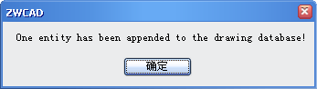

(vlr-remove reactor)
Forbids using a specified reactor object.
If the reactor argument represents a reactor object, this function returns a reactor object even if the reactor object has been forbidden, otherwise prompts "error: bad argument type".
The function accepts one argument:
| Argument | Meaning |
|---|---|
| reactor | A reactor object. |
Examples
| Code | Result |
|---|---|
|
(vl-load-com) (setq appobjvlr (vlr-acdb-reactor nil '((:vlr-objectAppended . objectAppended)))) ;;;define the callback function (defun objectAppended(reactor_object obj) (alert "One entity has been appended to the drawing database!") ) ;;;Forbid a reactor (defun c:Forbidvlr() (vlr-remove appobjvlr) ) |
If you haven't executed Forbidvlr command, ZWCAD will open a dialog as following automatically when you draw any entity:  But after executing Forbidevlr command, ZWCAD will never again open the dialog when you draw any entity. |
Tell me about...